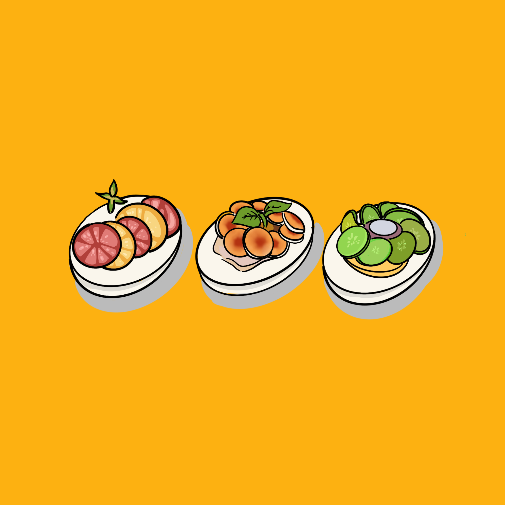
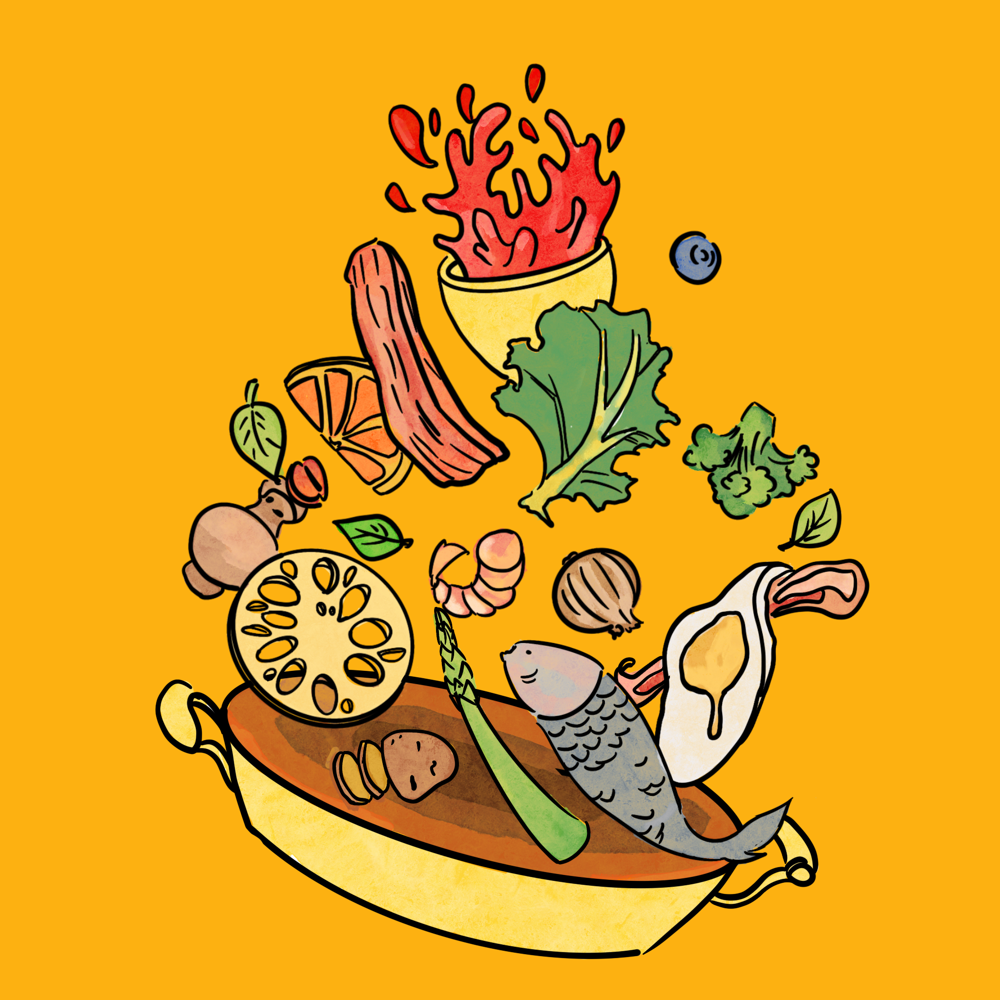
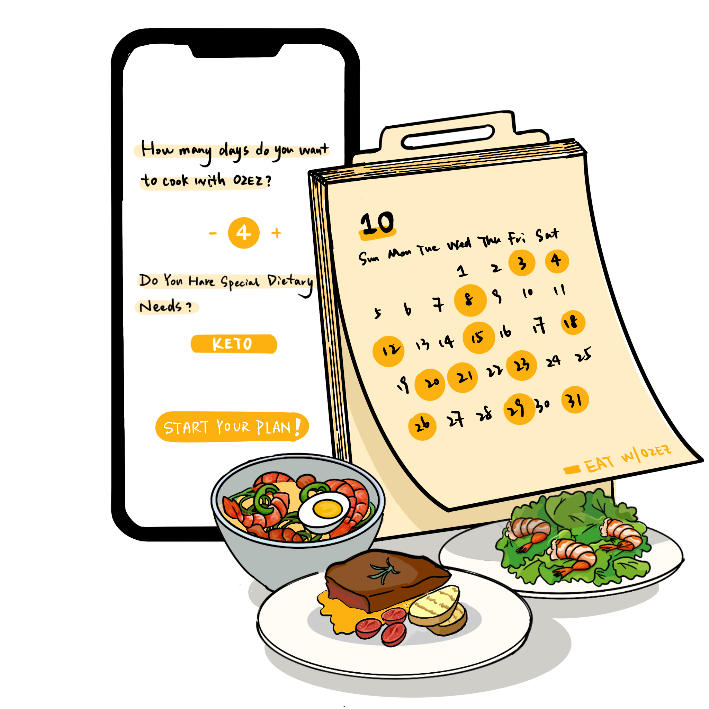
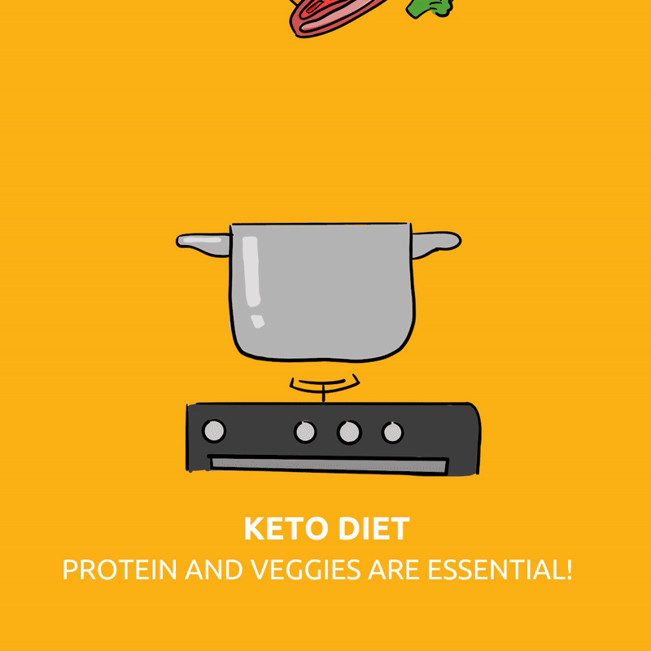
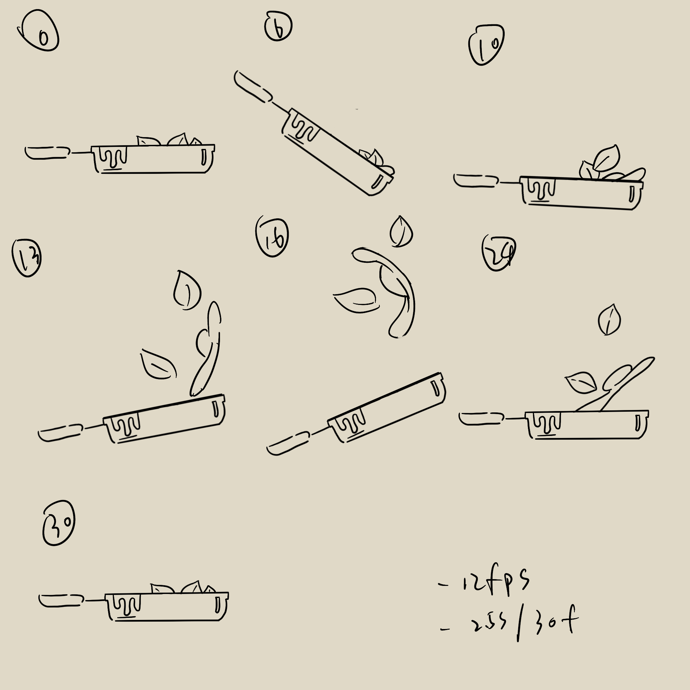
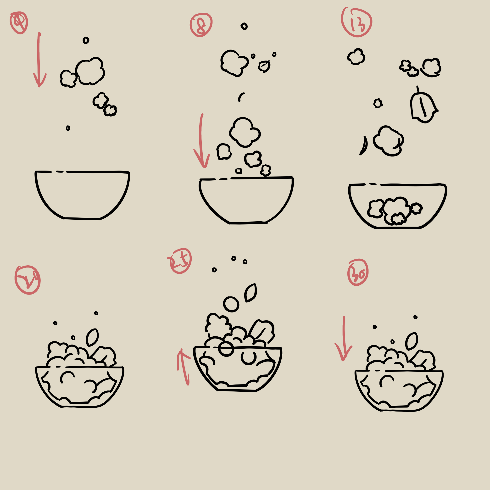

O2EZ
UI/UX, branding
Jun - Aug 2022
Tools
Figma, Adobe XD, Illustrator, Photoshop, Procreate
Project Overview
The goal of the project was to design a mobile app and website for a
Hong Kong Based meal kit service company, O2EZ, providing its ordering services for delivery in the
metro area of the city.
Hong Kong is known for its fast-paced lifestyle, and fast food and takeout are common dining options for
the young people. In light of the younger generation's pursuit of a healthy lifestyle, the project
seeks to create a meal service ordering platform, in hopes of attracting and retaining more regular
customers, and increase customer service efficiency and satisfaction.
My Role
My contribution to the project includes UI design of the app and branding. I was responsible for
conducting user research and usability studies, constructin flows, building a brand system and creating
visual materials, as well as making mobile app prototypes.
Research I conducted interviews as well as made empathy maps and competitive audits
to understand the users I'm designing for and their needs. The primary customers identified through
research were people wh live and/or work in the area between the ages of 24-45.
Research revealed that most senior users or users who work remotel are not often able to leave their
homes, especially during busy work hours. The interview also indicated that grocery shoppers prefer
sticking to a routine of ordering the same meal plan at least twice a week. This suggests that having a
scheduled delivery system can be very efficient for the their regular customers.
After comparing different meal kit apps and websites, I find that th most effective platforms generally
have a clear and simple information architecture. Navigating through sites like HelloFresh is very
straightforward and accessible. Links/buttons are clearly labeled, as well as colors and images are kept
consistent to prevent cognitive overload. Other successful apps keep a strong community of users who
often review and recommend store items to each other, driving more traffic to the site.
Output
Branding Assets




Animation & Social Media


Social Media Branding Mockup
(drag to left/right with mouse to see more animation)